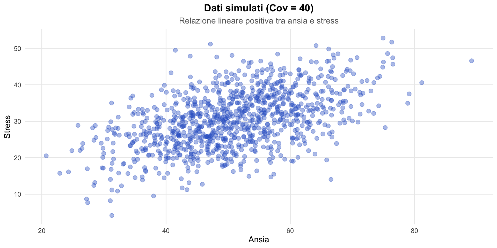
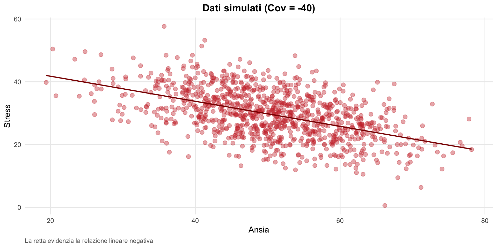
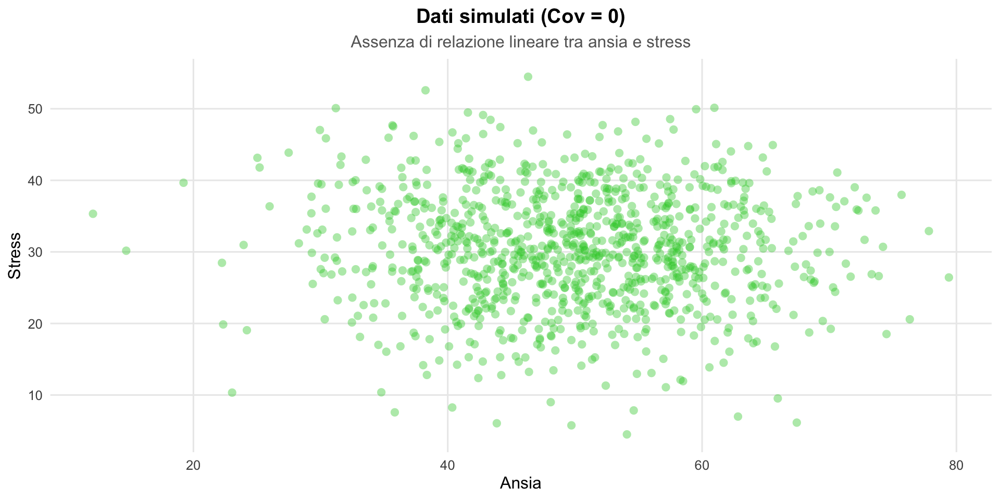
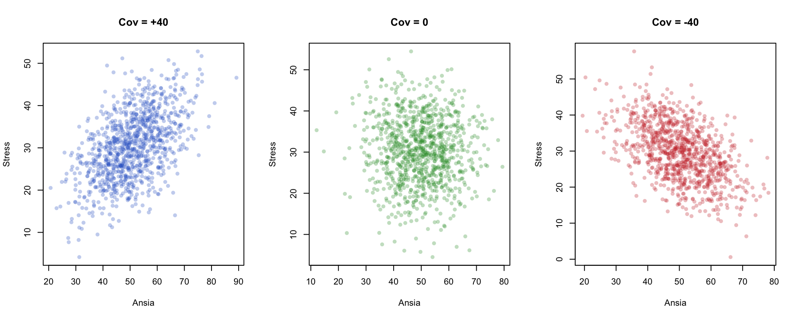
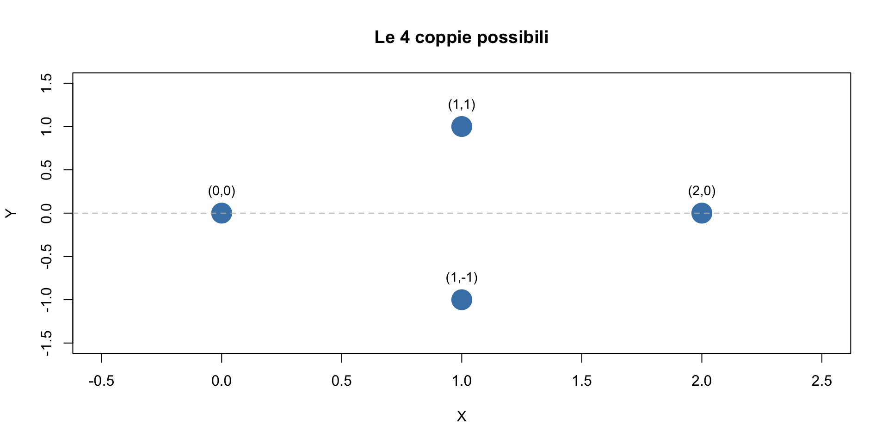
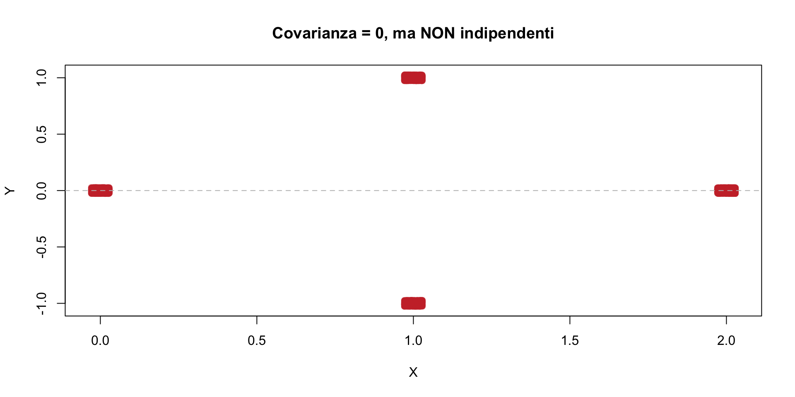
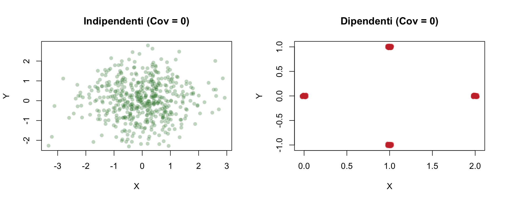
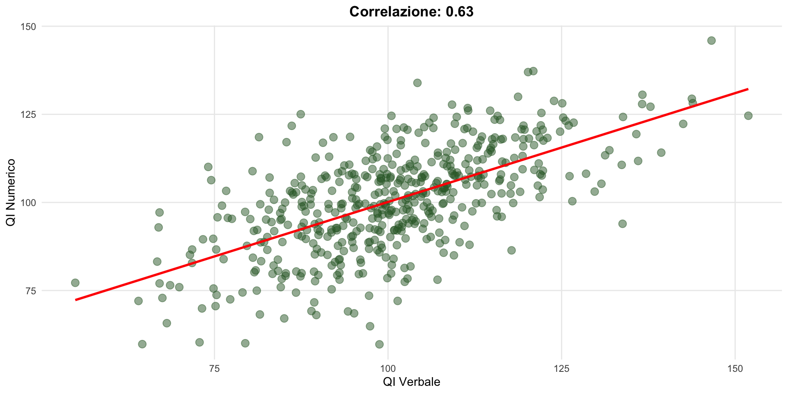

Probabilità congiunta
Calcoli e simulazioni in R
![]()
29 ottobre 2026
Simulare relazioni tra variabili
Perché simulare?
Nella prima parte avete imparato a calcolare covarianza e correlazione “a mano” su piccole tabelle. Nella pratica, lavorerete con centinaia o migliaia di osservazioni.
In questa seconda parte useremo R per:
- rappresentare distribuzioni congiunte;
- calcolare marginali, covarianza e correlazione;
- simulare dati con relazioni note e verificare che le formule funzionino;
- vedere con i vostri occhi cosa significa “incorrelazione senza indipendenza”.
Simulare dati è una competenza professionale: quando pianificate uno studio, prima di raccogliere dati reali, potete simulare risultati attesi per verificare che il vostro disegno di ricerca funzioni.
Obiettivo
In questa seconda parte:
- rappresenteremo le distribuzioni congiunte in R;
- calcoleremo le distribuzioni marginali, la covarianza e la correlazione;
- verificheremo l’indipendenza tra variabili attraverso simulazioni;
- esploreremo un caso speciale: quando due variabili sono incorrelate ma non indipendenti.
Esercizio 1 — Le monete in R
Lanciamo 3 monete equilibrate.
- \(X\) = numero totale di teste (0, 1, 2, 3);
- \(Y\) = risultato della prima moneta (0 = croce, 1 = testa).
La tabella di probabilità congiunta
| Y = 0 | Y = 1 | |
|---|---|---|
| X = 0 | 1/8 | 0 |
| X = 1 | 2/8 | 1/8 |
| X = 2 | 1/8 | 2/8 |
| X = 3 | 0 | 1/8 |
Ogni cella contiene \(P(X = x, Y = y)\).
Creare la tabella
Inseriamo le probabilità riga per riga:
Unire le righe in una matrice
[,1] [,2]
riga1 0.125 0.000
riga2 0.250 0.125
riga3 0.125 0.250
riga4 0.000 0.125rbind = “row bind” = unisci per righe.
Aggiungere nomi (opzionale ma utile)
Y=0 Y=1
X=0 0.125 0.000
X=1 0.250 0.125
X=2 0.125 0.250
X=3 0.000 0.125Ora la tabella è più leggibile.
Controllo: le probabilità sommano a 1?
La tabella è corretta.
Cos’è una marginale?
La marginale di X risponde a:
- qual è \(P(X = x)\), ignorando \(Y\)?
Si ottiene sommando su tutte le colonne (cioè su tutti i valori di \(Y\)).
Calcolare la marginale di X
rowSums = somma di ogni riga.
Interpretazione
- \(P(X = 0) = 1/8 = 0.125\)
- \(P(X = 1) = 3/8 = 0.375\)
- \(P(X = 2) = 3/8 = 0.375\)
- \(P(X = 3) = 1/8 = 0.125\)
Questa è la distribuzione binomiale con \(n = 3\) e \(p = 0.5\).
Calcolare la marginale di Y
colSums = somma di ogni colonna.
Interpretazione
- \(P(Y = 0) = 0.5\) (croce sulla prima moneta)
- \(P(Y = 1) = 0.5\) (testa sulla prima moneta)
Questo ha senso: la moneta è equilibrata.
Calcolare la covarianza
Per calcolare \(\text{Cov}(X, Y) = \mathbb{E}(XY) - \mathbb{E}(X)\mathbb{E}(Y)\)
dobbiamo trovare:
- \(\mathbb{E}(X)\) — media di X;
- \(\mathbb{E}(Y)\) — media di Y;
- \(\mathbb{E}(XY)\) — media del prodotto.
Passo 1: Definire i valori possibili
Passo 2: Calcolare E(X)
La media è la somma pesata: ogni valore per la sua probabilità.
In media, otteniamo 1.5 teste su 3 lanci.
Passo 3: Calcolare E(Y)
In media, la prima moneta dà 0.5 (metà delle volte testa).
Passo 4: Calcolare E(XY)
Qui dobbiamo considerare tutte le coppie \((x, y)\).
Per ogni cella della tabella, calcoliamo:
\[x \cdot y \cdot P(X=x, Y=y).\]
E(XY): il calcolo esplicito
Scriviamo tutti i termini:
# Per ogni cella: x * y * P(x, y)
termine_00 <- 0 * 0 * tabella["X=0", "Y=0"] # = 0
termine_01 <- 0 * 1 * tabella["X=0", "Y=1"] # = 0
termine_10 <- 1 * 0 * tabella["X=1", "Y=0"] # = 0
termine_11 <- 1 * 1 * tabella["X=1", "Y=1"] # = 1/8
termine_20 <- 2 * 0 * tabella["X=2", "Y=0"] # = 0
termine_21 <- 2 * 1 * tabella["X=2", "Y=1"] # = 4/8
termine_30 <- 3 * 0 * tabella["X=3", "Y=0"] # = 0
termine_31 <- 3 * 1 * tabella["X=3", "Y=1"] # = 3/8E(XY): la somma
Quali termini contano davvero?
Notiamo che molti termini sono zero (perché \(x = 0\) oppure \(y = 0\)).
I termini non nulli sono solo quelli con \(y = 1\) e \(x > 0\):
Passo 5: Calcolare la covarianza
Applichiamo la formula:
\[ \text{Cov}(X, Y) = \mathbb{E}(XY) - \mathbb{E}(X) \cdot \mathbb{E}(Y) \]
Interpretazione della covarianza
\[\text{Cov}(X, Y) = 0.25 > 0\]
Covarianza positiva: quando \(Y\) è alto (testa sulla prima moneta), anche \(X\) tende a essere alto (più teste totali).
Questo ha senso: se la prima moneta dà testa, il totale aumenta di 1.
Calcolare la correlazione
\[ \rho = \frac{\text{Cov}(X, Y)}{\sigma_X \cdot \sigma_Y} \]
Dobbiamo calcolare le deviazioni standard di X e Y.
Varianza di X
Formula: \(\text{Var}(X) = \mathbb{E}(X^2) - [\mathbb{E}(X)]^2\)
Varianza di Y
Correlazione
\(\rho \approx 0.58\): correlazione positiva moderata.
La regola dell’indipendenza
\(X\) e \(Y\) sono indipendenti se e solo se:
\[ P(X = x, Y = y) = P(X = x) \cdot P(Y = y) \]
per tutte le coppie \((x, y)\).
Verifica per una cella
Prendiamo la cella \((X = 1, Y = 0)\):
Confronto
\(0.25 \neq 0.1875\)
Sono diversi. Quindi X e Y non sono indipendenti.
Verifica per tutte le celle
Calcoliamo il prodotto delle marginali per ogni cella:
Verifica per tutte le celle (continua)
Confronto visivo
| Cella | Congiunta | Prodotto marginali |
|---|---|---|
| (0, 0) | 0.125 | 0.0625 |
| (0, 1) | 0.000 | 0.0625 |
| (1, 0) | 0.250 | 0.1875 |
| (1, 1) | 0.125 | 0.1875 |
| (2, 0) | 0.125 | 0.1875 |
| (2, 1) | 0.250 | 0.1875 |
| (3, 0) | 0.000 | 0.0625 |
| (3, 1) | 0.125 | 0.0625 |
Nessuna riga coincide → \(X\) e \(Y\) non sono indipendenti.
Altro criterio: la covarianza
Se \(X\) e \(Y\) sono indipendenti, allora \(\text{Cov}(X, Y) = 0\).
Noi abbiamo trovato \(\text{Cov}(X, Y) = 0.25 \neq 0\).
Quindi X e Y non sono indipendenti.
Attenzione
Il contrario non è vero:
\(\text{Cov}(X, Y) = 0\) non implica indipendenza.
Esistono variabili dipendenti con covarianza zero.
Verifica con simulazione
Generiamo molti lanci di 3 monete e calcoliamo la covarianza campionaria.
Deve essere vicina a 0.25.
Simulare i lanci
Cosa abbiamo creato?
[,1] [,2] [,3]
[1,] 1 1 0
[2,] 0 1 0
[3,] 0 0 1
[4,] 1 0 0
[5,] 0 1 1
[6,] 1 1 0Ogni riga è un esperimento (3 lanci).
0 = croce, 1 = testa.
Calcolare X e Y
Verificare X
Simile a \(P(X) = (0.125, 0.375, 0.375, 0.125)\).
Covarianza campionaria
Vicino a 0.25.
Correlazione campionaria
Vicino a 0.58.
Riepilogo dei calcoli
| Quantità | Formula R | Risultato |
|---|---|---|
| Marginale X | rowSums(tabella) |
(0.125, 0.375, 0.375, 0.125) |
| Marginale Y | colSums(tabella) |
(0.5, 0.5) |
| E(X) | sum(valori * prob) |
1.5 |
| Var(X) | sum(valori^2 * prob) - E^2 |
0.75 |
| Cov(X,Y) | E(XY) - E(X)*E(Y) |
0.25 |
| ρ | Cov / (SD_X * SD_Y) |
0.58 |
Riepilogo concettuale
Marginale = somma su una dimensione della tabella.
Covarianza = quanto X e Y variano insieme.
Indipendenza si verifica controllando se \(P(X,Y) = P(X) \cdot P(Y)\).
Covarianza ≠ 0 implica dipendenza, ma Cov = 0 non implica indipendenza.
Le simulazioni confermano i calcoli teorici.
Simulare dati bivariati: uno strumento professionale
Esercizio 2 — Simulare ansia e stress
Obiettivo: generare dati in cui due variabili abbiano una covarianza prestabilita.
Nella pratica, questo è utile per:
- verificare le formule con dati concreti;
- pianificare studi (power analysis);
- capire cosa succede quando le variabili sono correlate.
L’idea
R può generare dati da una distribuzione normale bivariata.
Dobbiamo solo specificare:
- le medie delle due variabili;
- la matrice di covarianza.
R fa tutto il resto.
Esempio: Ansia e Stress
Vogliamo simulare due variabili:
- ansia con media 50 e varianza 100 (SD = 10);
- stress con media 30 e varianza 64 (SD = 8);
- covarianza tra Ansia e Stress: 40.
Passo 1: Definire le medie
Il primo numero è la media di Ansia, il secondo di Stress.
Passo 2: Costruire la matrice di covarianza
La matrice di covarianza ha questa struttura:
\[ \Sigma = \begin{pmatrix} \text{Var}(X) & \text{Cov}(X,Y) \\ \text{Cov}(X,Y) & \text{Var}(Y) \end{pmatrix} \]
Costruire la matrice in R
Leggere la matrice
- Diagonale (100, 64): le varianze.
- Fuori diagonale (40, 40): la covarianza.
La matrice è simmetrica: Cov(X,Y) = Cov(Y,X).
Passo 3: Generare i dati
n = 1000: quante osservazionimu = medie: il vettore delle medieSigma = Sigma: la matrice di covarianza
Cosa abbiamo ottenuto?
Ansia Stress
[1,] 51.66052 25.31466
[2,] 61.12340 27.75169
[3,] 60.85604 31.72480
[4,] 56.76830 38.58527
[5,] 47.99901 41.90491
[6,] 40.04854 37.94505Ogni riga è una “persona” con un punteggio di Ansia e uno di Stress.
Passo 4: Verificare la simulazione
Le medie campionarie sono vicine a (50, 30)?
La covarianza campionaria
La covarianza campionaria è vicina a 40?
La matrice di covarianza campionaria
Confronta con la matrice teorica:
Visualizzare la relazione

La nuvola di punti ha un andamento crescente: i valori salgono spostandosi verso destra, rivelando una covarianza positiva tra le variabili.
Esercizio 3 — Cambiare la covarianza
Cosa succede se la covarianza è negativa?
Visualizzazione con covarianza negativa

La nuvola scende verso destra: covarianza negativa.
Covarianza zero
Cosa succede se le variabili sono indipendenti?
Visualizzazione con covarianza zero

Nuvola “rotonda”: nessuna relazione lineare.
Confronto visivo

A sinistra: sale (positiva). Al centro: rotonda (zero). A destra: scende (negativa).
Esercizio 4 — Dalla covarianza alla correlazione
La correlazione è la covarianza “standardizzata”:
\[ \rho = \frac{\text{Cov}(X, Y)}{\sigma_X \cdot \sigma_Y} \]
Calcolo per il nostro esempio
Verifica con i dati simulati
Vicino a 0.5.
Messaggio chiave
La matrice di covarianza determina la relazione tra le variabili:
| Covarianza | Relazione | Forma della nuvola |
|---|---|---|
| Positiva | Diretta | Sale a destra |
| Zero | Nessuna | Rotonda |
| Negativa | Inversa | Scende a destra |
Nota tecnica
Questo metodo assume che i dati seguano una distribuzione normale bivariata, cioè che ciascuna variabile da sola sia distribuita normalmente e che la relazione tra loro sia lineare.
In molte applicazioni psicologiche questa è un’approssimazione ragionevole. Per distribuzioni non normali esistono altri metodi, ma sono più complessi.
Esercizio 5 — Incorrelazione senza indipendenza
Molti pensano che:
“Covarianza zero” = “Variabili indipendenti”.
Abbiamo visto che questo è falso Consideriamo ora un controesempio che ha conseguenze pratiche importanti: è possibile trovare \(\rho = 0\) tra due variabili che in realtà hanno una relazione forte, ma semplicemente non lineare.
Pensate alla curva di Yerkes-Dodson: la relazione tra l’arousal e la prestazione è a forma di U rovesciata. La correlazione lineare è quasi nulla, eppure la relazione è sistematica.
La distribuzione
Quattro coppie \((X, Y)\), tutte equiprobabili:
| Coppia | X | Y | Probabilità |
|---|---|---|---|
| 1 | 0 | 0 | 1/4 |
| 2 | 1 | 1 | 1/4 |
| 3 | 1 | -1 | 1/4 |
| 4 | 2 | 0 | 1/4 |
Visualizziamo le coppie

Notiamo: la struttura è simmetrica rispetto all’asse X.
Simulare i dati
Generiamo 10,000 coppie (X, Y):
Unire e mescolare
Verifica: le coppie sono equiprobabili?
Ogni coppia compare 2500 volte (25% del totale).
Calcolare la covarianza
La covarianza è zero!
Perché la covarianza è zero?
Guardiamo cosa succede per ogni valore di X:
- quando \(X = 0\): \(Y = 0\);
- quando \(X = 1\): \(Y = +1\) oppure \(Y = -1\) (metà e metà);
- quando \(X = 2\): \(Y = 0\).
Per \(X = 1\), i valori \(+1\) e \(-1\) si compensano perfettamente.
Verifica della non-indipendenza
Se X e Y fossero indipendenti, tutte le combinazioni sarebbero possibili.
Domanda: la coppia \((X = 0, Y = 1)\) esiste?
Risposta
Mai!
Ma se fossero indipendenti, dovrebbe comparire circa 625 volte.
La tabella completa
Molte celle sono vuote.
Se X e Y fossero indipendenti, tutte le celle avrebbero valori > 0.
Visualizzazione

Cosa mostra il grafico?
- I punti non formano una nuvola che sale o scende → covarianza zero.
- Ma i punti esistono solo in 4 posizioni → c’è una struttura.
- Conoscere X limita i possibili valori di Y.
Confronto visivo

A sinistra: nuvola uniforme. A destra: solo 4 posizioni possibili.
Il messaggio chiave
| Affermazione | Vera? |
|---|---|
| Indipendenza → Cov = 0 | Sempre vera |
| Cov = 0 → Indipendenza | Falsa! |
La covarianza misura solo la relazione lineare. Nel nostro esempio c’è una relazione chiara (non tutte le combinazioni sono possibili), ma questa relazione è simmetrica — non lineare — e la covarianza non la cattura.
Esercizio 6 — Varianza della somma con covarianza
Simuliamo due variabili casuali continue:
- \(X \sim \mathcal{N}(50,\,10)\);
- \(Y \sim \mathcal{N}(50,\,10)\);
- correlazione tra \(X\) e \(Y\): \(\rho = 0.6\).
Obiettivo: verificare con una simulazione che
\[ \mathbb{V}(X + Y) = \mathbb{V}(X) + \mathbb{V}(Y) + 2\,\text{Cov}(X,Y). \]
Soluzione Esercizio 6 — Simulazione
[,1] [,2]
[1,] 56.58105 47.62671
[2,] 49.51829 44.56532
[3,] 44.01070 50.41480
[4,] 34.31820 24.49618
[5,] 52.18382 44.75946
[6,] 47.12614 55.38323
[7,] 35.94309 37.27013
[8,] 39.01063 42.91857
[9,] 25.71726 57.31590
[10,] 41.28270 49.88104Verifica empirica della formula
Interpretazione
- La varianza osservata di \(X + Y\) coincide (con errori di simulazione minimi) con la formula teorica.
- La covarianza positiva aumenta la variabilità della somma.
- Se \(X\) e \(Y\) fossero indipendenti, il termine \(2\text{Cov}(X,Y)\) sarebbe zero.
La simulazione rende chiaro perché la covarianza è fondamentale quando si sommano variabili correlate.
Nota pratica
Questo è esattamente ciò che accade quando sommate punteggi di sottoscale in un test psicometrico.
Se le sottoscale sono correlate positivamente (come è quasi sempre il caso), la varianza del punteggio totale è maggiore della somma delle varianze delle singole sottoscale.
Ignorare questo fatto porta a sottostimare l’errore standard di misura.
Esercizio 7 — Indipendenza vs dipendenza
Confrontiamo la varianza della somma (X + Y) in due scenari:
Scenario A — Indipendenza
- \(X\) e \(Y\) indipendenti
- \(\mathbb{V}(X) = \mathbb{V}(Y) = 100\)
Scenario B — Dipendenza
- \(X\) e \(Y\) correlati positivamente (\(\rho = 0.7\))
- \(\mathbb{V}(X) = \mathbb{V}(Y) = 100\)
Domanda: cosa cambia nella variabilità di \(X + Y\)?
Soluzione Esercizio 7 — Simulazione
Scenario A — Variabili indipendenti
Scenario B — Variabili correlate (ρ = 0.7)
Confronto finale
Interpretazione
Quando \(X\) e \(Y\) sono indipendenti: \[ \mathbb{V}(X + Y) \approx 100 + 100 = 200 \]
Quando \(X\) e \(Y\) sono correlati positivamente (\(\rho = 0.7\)): \[ \mathbb{V}(X + Y) = 100 + 100 + 2 \cdot 70 = 340 \]
La correlazione positiva aumenta la varianza della somma del 70% rispetto al caso indipendente — perché le due variabili tendono a muoversi nella stessa direzione.
Messaggio chiave
Non basta conoscere le varianze: quando le variabili sono dipendenti, la covarianza fa la differenza.
Esercizio 8 — Correlazione tra scale cognitive
Simula dati di 500 studenti con:
- QI verbale: \(\mu = 100\), \(\sigma = 15\);
- QI numerico: correlazione \(\rho = 0.65\) con QI verbale.
Calcola e visualizza la correlazione.
Soluzione Esercizio 8
Visualizzazione della correlazione

Cosa ci dice questo esercizio
Abbiamo appena simulato qualcosa che assomiglia a dati reali di un test di intelligenza. La correlazione di circa 0.65 tra QI verbale e numerico è coerente con ciò che si osserva nella realtà — ed è il fondamento empirico del cosiddetto fattore g di intelligenza generale.
Quando nell’assessment psicometrico sentite parlare di “analisi fattoriale”, il punto di partenza è proprio la matrice di correlazione tra le sottoscale. Ciò che state vedendo in questo grafico è il dato di base su cui lavora l’analisi fattoriale.
Funzioni R per covarianza e correlazione
Riepilogo: funzioni R essenziali
| Operazione | Funzione R |
|---|---|
| Marginale righe | rowSums(mat) |
| Marginale colonne | colSums(mat) |
| Covarianza | cov(x, y) |
| Correlazione | cor(x, y) |
| Matrice correlazione | cor(data) |
| Bivariata Normale | MASS::mvrnorm(n, mu, Sigma) |
Il percorso fin qui
Lezioni 5-6 — Probabilità e aggiornamento bayesiano.
Lezione 8 — Modelli per conteggi: Bernoulli, Binomiale, Poisson.
Lezione 9 — Modelli per misure continue: Normale e Beta.
Lezione 10 — Valore atteso, varianza, funzioni di v.c.
Lezione 11 (oggi) — Come due variabili variano insieme: covarianza e correlazione.
Avete ora tutti gli strumenti probabilistici per affrontare il passo successivo: la funzione di verosimiglianza — il meccanismo formale attraverso cui i dati “parlano” ai parametri del modello.
Cosa abbiamo imparato oggi
La distribuzione congiunta si rappresenta con matrici in R.
Le marginali si calcolano con
rowSums()ecolSums().L’indipendenza si verifica confrontando \(P(X,Y)\) con \(P(X) \cdot P(Y)\).
Covarianza e correlazione si calcolano con
cov()ecor().Incorrelazione (\(\rho = 0\)) non implica indipendenza!
La simulazione permette di verificare empiricamente le proprietà teoriche.
Per la prossima lezione
- Rivedere il materiale su: https://ccaudek.github.io/utet-prob/
- Capitoli sulla funzione di verosimiglianza.
- Esercitarsi con le simulazioni in R.
Nel prossimo incontro: Funzione di verosimiglianza.